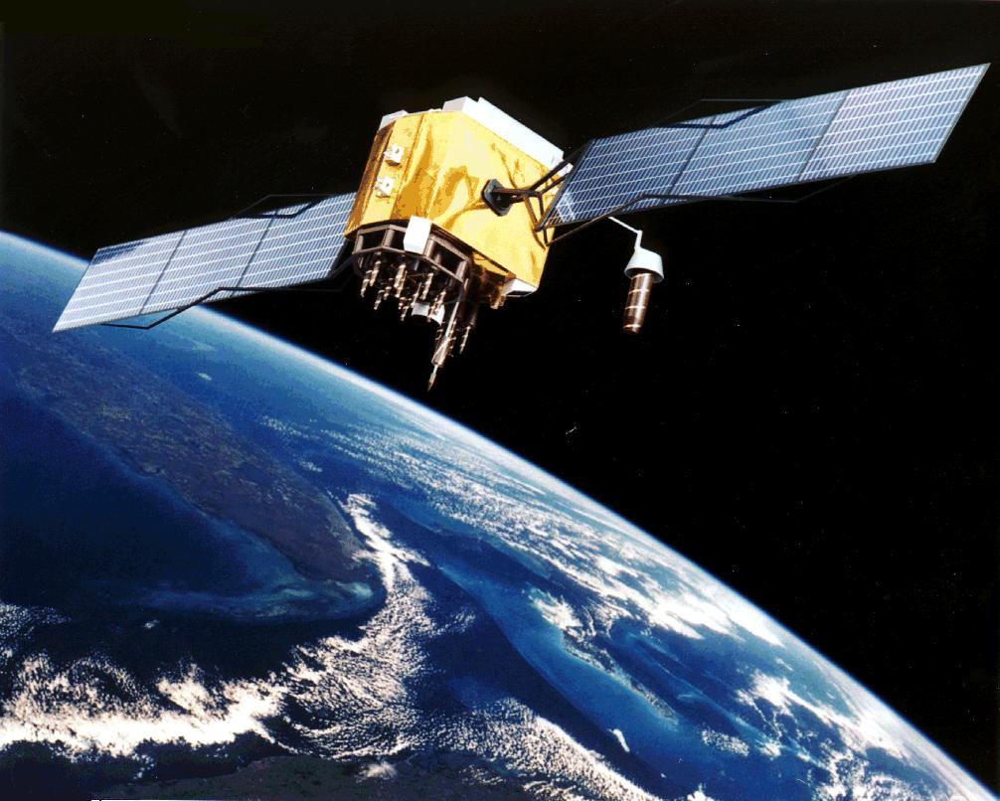

1 Satellitengestützte Sensoren
u.M.v. Engin Abali, Viktor Schneider, Denis Moos
1.1 8.1 Einleitung
Die Idee für ein satellitengestütztes Ortungssystem stammt von dem deutschen Ingenieur Karl Hans Janke aus dem Jahre 1939. In Berlin meldete er das Patent für einen „Standortanzeiger, insbesondere für Luftfahrzeuge“ an, welches im Jahre 1943 erteilt wurde. Doch die Welt schien für ein solches Ortungssystem noch nicht bereit zu sein, woraufhin der Wissenschaftler wegen „wahnhaften Erfindens“ in eine Nervenanstalt eingewiesen wurde, wo er 1988 verstarb. Mittlerweile befinden sich weltweit mehrere satellitenbasierte Systeme im Einsatz oder in der Entwicklung wie z.B. das US-amerikanische GPS, das russische GLONASS oder das europäische Galileo. Alle Ortungs- und Navigationssysteme werden unter dem Begriff „globale Navigationssatellitensysteme“ (GNSS – Global Navigation Satellite System) zusammengefasst.
In Kapitel Kapitel 7 wurden laufzeitbasierte Sensoren beschrieben, die nach dem Puls-Echo-Prinzip funktionieren. Die satellitengestützte Ortung und Navigation gehört ebenfalls zu den laufzeitbasierten Verfahren, jedoch mit dem Unterschied, dass es sich dabei um eine Einweg-Entfernungsmessung handelt (Englisch: One-Way-Ranging). Dieses ermöglicht die Nutzung durch eine unbegrenzte Anzahl von Empfängern gleichzeitig.
Das folgende Unterkapitel 8.2 beschreibt das Messprinzip der Positionsbestimmung mithilfe von Satelliten und einem Empfänger. In diesem Abschnitt wird neben den physikalischen Grundlagen insbesondere auch auf die Messgenauigkeit und mögliche Fehlerquellen der Technologie sowie den Aufbau und die Funktion eines Empfängers eingegangen. Das sich daran anschließende Kapitel Kapitel 8.3 beschäftigt sich mit Anwendungen dieses Messverfahrens. Im darauf folgenden Kapitel Kapitel 8.4 werden die vier existierenden globalen Navigationssatellitensysteme vorgestellt und miteinander verglichen. Eine Zusammenfassung in Kapitel Kapitel 8.4 schließt dieses Kapitel ab.
1.2 8.2 Messprinzip
1.2.1 8.2.1 Physikalische Grundlagen
Die satellitengestützte Ortsbestimmung (eigener Standort) und Ortung (fremder Standort) gehört dem Prinzip nach zu den laufzeitbasierten Verfahren, wie sie ausführlich in Kapitel Kapitel 7 behandelt wurden. Die physikalischen Grundlagen dieser auch Wellenausbreitungssensoren genannten Detektoren wurden in Kapitel Kapitel 7.1 beschrieben und werden hier nicht wiederholt.
Ein spezieller laufzeitbasierter Sensor ist der in Kapitel Kapitel 7.3 behandelte Radar (Radio Detection and Ranging). Die satellitengestützte Ortsbestimmung basiert genau wie die Entfernungsmessung mittels Radar auf der Ausbreitung elektromagnetischer Wellen. Diese weisen Trägerfrequenzen zwischen 1,164 GHz und 1,602 GHz auf, wobei jedes der vier globalen Navigationssatellitensysteme jeweils nur sehr enge, separate Frequenzbereiche nutzen darf, seine sogenannten Bänder. Die Trägerfrequenzen für die satellitengestützte Ortsbestimmung liegen damit ungefähr in der Mitte des auch von Radar-Sensoren genutzten Spektralbereichs. Die physikalischen Grundlagen von Radarwellen und deren Ausbreitung wurden in Kapitel Kapitel 7.3.2 präsentiert.
Die Trägerfrequenzen korrespondieren mit Wellenlängen im oberen Mikrowellenbereich zwischen 18,71 cm und 25,75 cm (siehe Tabelle 7.3.1). In diesem Spektralbereich ist die atmosphärische Grunddämpfung der Signale durch Absorption und Streuung an Luftmolekülen sowie die wetterabhängige Zusatzdämpfung in der Troposphäre durch Wolken, Regen, Nebel, etc. vergleichsweise klein (siehe Abbildung 7.3.3). Dies ermöglicht die für das Funktionsprinzip erforderlichen großen Reichweiten (Wolff 1998).
Für die satellitengestützte Ortsbestimmung werden mehrere Navigationssatelliten in eine Umlaufbahn um die Erde verbracht. Abbildung 8.1 zeigt als Beispiel einen GPS-Block-II-F-Satelliten. Den vier globalen Navigationssatellitensystemen sind dafür verschiedene Höhen zwischen 19.130 km (GLONASS) und 23.222 km (Galileo) zugewiesen. Von dort emittieren die Satelliten ihre Mikrowellen-Signale in Richtung Erde.

Abbildung 8.1: GPS-Block-II-F-Satellit in der Erdumlaufbahn (CC BY 2.0, NASA).
Wie alle laufzeitbasierten Sensoren basiert auch die satellitengestützte Ortsbestimmung nicht auf der Emission kontinuierlicher Wellen sondern zeitlich modulierter Signale. Hierfür wird das hochfrequente Trägersignal niederfrequent variiert. Die Periodendauer dieser Modulation ist deutlich größer als die Periodendauer der Trägerwelle. GPS und die meisten anderen globalen Navigationssatellitensysteme verwenden hierfür eine komplexe Phasenmodulation. Näheres zu verschiedenen Modulationsarten findet sich in Kapitel Kapitel 7.1.2.
Da die bodennahen Schichten der Atmosphäre eine recht homogene Zusammensetzung haben, ist auch die Ausbreitungsgeschwindigkeit elektromagnetischer Wellen mit ca. 299.702 km/s (etwa 0,03% geringer als die Vakuumlichtgeschwindigkeit) annähernd konstant (vergleiche Tabelle 7.3.2).
Um die Positionskoordinaten eines Objekts auf der Erdoberfläche zu bestimmen, muss dieses einen Empfänger für die Mikrowellensignale der Satelliten haben. Die Ortsbestimmung aller Navigations- und Ortungssysteme basiert dann auf dem folgenden Verfahren (H. Klausing & W. Holpp 2000, S.313-314):
-
Ein Satellit (z.B. ein GPS-Satellit) emittiert zum Sendezeitpunkt ein Signal von seinem Sendeort in der Erdumlaufbahn.
-
Der Empfänger auf der Erdoberfläche (z.B. ein GPS-Empfänger) detektiert das Signal zum Empfangszeitpunkt .
-
Der Empfänger bestimmt aus der Zeitdifferenz zwischen dem Sende- und dem Empfangszeitpunkt die Laufzeit des Signals:
. (8.1)
-
Der Empfänger bestimmt aus der Annahme einer gleichförmigen Ausbreitungsgeschwindigkeit des Signals seinen Abstand vom Sendeort des Satelliten:
. (8.2)
-
Der Empfänger bestimmt aus dem Abstand und dem Sendeort des Satelliten die Kugelfläche um den Sendeort, auf der er sich befindet.
-
Der Empfänger wiederholt die Schritte 1 bis 5 für die Signale anderer Satelliten.
-
Der Empfänger bestimmt seine Position im dreidimensionalen Raum durch Ermittlung des eindeutigen Schnittpunkts der Kugelflächen um die Satelliten (siehe Kapitel Kapitel 8.2.2).
Durch die Aufzeichnung der Position eines Objekts als Funktion der Zeit lässt sich mithilfe der satellitengestützten Ortsbestimmung auch dessen Geschwindigkeit ermitteln.
Im Gegensatz zu der in Kapitel Kapitel 7 beschriebenen Laufzeitmessung handelt es sich bei der satellitengestützten Ortsbestimmung allerdings nicht um ein Puls-Echo-Verfahren, bei dem das Senden und Empfangen von demselben System durchgeführt wird. Diese sogenannte Einweg-Entfernungsmessung (Englisch: One-Way-Ranging) ist in gewisser Weise dem sekundären Radar verwandt, denn Sender (Satellit) und Empfänger sind weit (ca. 20.000 km) voneinander entfernt. Auf diese Art und Weise ist es möglich, dass das System von einer unbegrenzten Anzahl von Empfängern gleichzeitig genutzt wird. Um die Laufzeit und damit seine Position zu bestimmen, müssen dem Empfänger allerdings für jedes Satellitensignal der Sendezeitpunkt und der Sendeort mitgeteilt werden. Dies erfolgt mithilfe der vergleichsweise komplexen Signalmodulation. Die verschiedenen globalen Navigationssatellitensysteme nutzen dabei unterschiedliche Codierungen, um die Information zu übermitteln. Die Signalübertragung und Codierung ist dabei so eindeutig, dass es dem Empfänger möglich ist zu bestimmen, von welchem Satelliten das empfangene Signal stammt, obwohl alle Satelliten eines Systems die gleiche Trägerfrequenz benutzen.
1.2.2 8.2.2 Ortsbestimmung
Anhand der Abbildung 8.2 lässt sich die zweidimensionale Positionsbestimmung erklären. Wie in Kapitel Kapitel 8.2.1 ausgeführt, ergibt sich als möglicher Aufenthaltsort des Empfängers für jedes empfangene Satellitensignal eine Kugelfläche im Raum und damit ein Kreis auf der Erdoberfläche. Betrachtet man die beiden Kreise, die von den Signalen der Satelliten 1 und 2 herrühren (in der Abbildung Sat 1 und Sat 2), so entstehen in der Regel zwei mögliche Schnittpunkte auf der Erdoberfläche (Punkte A und B). Zieht man nun noch einen dritten Satelliten hinzu (Sat 3), so ergibt sich ein eindeutiger Schnittpunkt aller drei Satelliten. Der Empfänger befindet sich am Punkt B (Klausing & Holpp 2000, S. 314).
Abbildung 8.2: 2D-Positionsbestimmung mit drei Satelliten.
Um eine extrem hohe Genauigkeit der Sendezeiten den einzelnen Satelliten zu gewährleisten, hat jeder Satellit bis zur vier Atomuhren an Bord. Da es allerdings zu kostenintensiv wäre, auch die Empfänger mit einer Atomuhr auszustatten, existiert in der Regel ein Uhrenfehler des Empfängers. Dieser wird allerdings durch ein spezielles Korrekturverfahren kompensiert, denn eine Zeitdifferenz von 1/100 Sekunde hätte schon einen Positionsfehler von 3000 km zur Folge.
Um die Folgen eines Uhrenfehlers zu verdeutlichen, betrachten wir in Abbildung 8.3 einen GPS-Empfänger, dessen Uhr, bezogen auf die Uhr der Satelliten, eine halbe Sekunde vorgeht. Somit ist die Laufzeit des Signals vom Sender zum Empfänger eine halbe Sekunde länger als korrekt. Dies hat zur Folge, dass das Ergebnis der Ortsbestimmung Punkt “B“ lautet, während Punkt “A“ der richtige Standort gewesen wäre.
Abbildung 8.3: 2D-Positionsbestimmung mit zwei Satelliten und Uhrenfehler.
Zieht man allerdings nun einen dritten Satelliten heran, so liefert die Ortsbestimmung mit Uhrenfehler drei verschiedene Standorte (siehe Schnittpunkte “B“ in Abbildung 8.4). Der Uhrenfehler des Empfängers kann also sofort festgestellt werden. Die Uhrzeit des Empfängers wird nun in der Art und Weise korrigiert, dass nur ein Schnittpunkt existiert. Nun läuft die Uhr des Empfängers synchron mit den Atomuhren der Satelliten. Der Standort (Punkt “A“) ist ermittelt.
Abbildung 8.4: 2D-Positionsbestimmung mit drei Satelliten und Korrektur des Uhrenfehlers.
Für die Ortsbestimmung auf der als bekannt angenommenen zweidimensionalen Erdoberfläche einschließlich der Korrektur des Empfängeruhrenfehlers ist also der Empfang von drei Satellitensignalen erforderlich (2D-Position-Fix). Um die Position im dreidimensionalen Raum zu bestimmen (3D-Position-Fix), benötigt man das Signal eines vierten Satelliten. Mit dessen Hilfe kann auch die Höhe des Empfängers über der Erdoberfläche ermittelt werden.
Da die vier, aus den Laufzeiten ermittelten Entfernungen () noch durch die aus dem Uhrenfehler resultierende Entfernungsabweichung und eventuelle andere systematische Fehler verfälscht sind, werden diese als Pseudoentfernungen bezeichnet. Um die Koordinaten des Aufenthaltsorts des Nutzers zu bestimmen, werden folgende Gleichungen aufgestellt:
(8.3)
(8.4)
(8.5)
(8.6)
(8.7)
Dabei sind die Koordinaten des Sendeortes des Satelliten. Mithilfe der Gleichungen 8.3 bis 8.7 lassen sich nun die vier Unbekannten und T berechnen.
Um sicherzustellen, dass ein Empfänger auf jedem Punkt der Erdoberfläche die Signale von mindestens vier Satelliten detektieren kann, müssen sich mindestens 24 Satelliten in 20.000 km Höhe befinden. Diese sind auf sechs Umlaufbahnen verteilt (vier Satelliten pro Umlaufbahn) und bewegen sich im Falle von GPS mit einer Geschwindigkeit von annähernd 3,9 km/s. Da die Satelliten allerdings nur eine Lebensdauer von ca. 7,5 Jahren haben und man aktuell rund 60 Tage für das Auswechseln eines Satelliten benötigt, befinden sich sicherheitshalber zu jeder Zeit zwischen 27 und 32 Satelliten eines Navigationssatellitensystems in der Stratosphäre. Um die Kosten zu verringern, versucht man den Wechsel auf zehn Tage zu reduzieren. Dadurch könnte die Anzahl der Satelliten auf 25 reduziert werden (Heidelberg 2002, S. 259).
1.2.3 8.2.3 Empfänger
Beispielhaft für den Empfänger eines globalen Navigationssatellitensystems zeigt Abbildung 8.5 das hochintegrierte GPS-Modul GTPA010 GPS der US-amerikanischen Firma Adafruit Industries. Inklusive Antenne hat es die Abmessungen 25,5 mm × 35,0 mm × 6,5 mm und kostet zwischen 30 Euro und 40 Euro.
Abbildung 8.5: Adafruit GTPA010 GPS module, oomlout: https://www.flickr.com/photos/snazzyguy/6985482878/ (CC BY 2.0).
Ein typischer Empfänger unterteilt sich in fünf Module, die jeweils aus den folgenden Komponenten bestehen (Bauer 1997, S. 145):
-
Hochfrequenzteil
-
Antenne mit RF-Vorverstärker
-
Frequenzumsetzer RF/ZF mit A/D-Wandler
-
Oszillator mit Frequenzsynthesizer
-
Signalerfassung und-verarbeitung
-
Signalprozessor für n Kanäle
-
Messgrößenverarbeitung
-
Navigationsprozessor
-
Empfängerprozessor
-
Uhrzeit/Datumfunktionen
-
Nutzerinterface
-
Bedieneinheit
-
Display
-
Interne Speicher
-
Stromversorgung
In Abbildung 8.6 sind die wesentlichen Bestandteile eines GPS-Empfängers in Form eines vereinfachten Funktionsschaltbilds dargestellt.
Abbildung 8.5: Vereinfachtes Funktionsschaltbild eines GPS-Empfängers.
Im Hochfrequenzteil wird das Radiofrequenz-Signal (RF) des Satelliten mithilfe einer Antenne aufgenommen, verstärkt und in den niederfrequenten Zwischenfrequenzbereich (ZF, Englisch: Intermediate Frequency) umgesetzt. Der Referenz-Oszillator mit dem Frequenzsynthesizer hat zwei Aufgaben im GPS-Empfänger. Zum einen liefert er die für die Frequenzumsetzung erforderliche Trägerfrequenz und zum anderen stellt er die Taktfrequenz für den digitalen Signalprozessor zur Verfügung. Die Prozessoren der Signal- und Messgrößenverarbeitung regeln die Operationen für die Verarbeitung der Messgrößen. Sie decodieren die frequenzumgesetzten Satellitensignale und berechnen die dreidimensionale Position. Das Nutzerinterface besteht aus dem Bedienteil mit Funktionstasten, einem Display und einem internen Speicher. Neben den Funktionstasten haben besondere Empfänger Modelle ein weiteres Tastenfeld für die Kommunikation. Über ein Display können berechnete Standortkoordinaten, Nummern der sichtbaren Satelliten, Datenumfang und weitere Informationen dargestellt werden. Ein Speicher wird benötigt, um eine Nachbereitung der Signale zu ermöglichen, dabei werden neben internen auch externe Speicher verwendet (Mansfeld 2004, S.147f).
1.2.4 8.2.4 Messgenauigkeit und Fehlerquellen
Mithilfe der satellitengestützten Ortbestimmung kann die Position des Empfängers sowie evtl. Zusatzinformationen wie dessen Geschwindigkeit mit hoher Genauigkeit ermittelt werden. Um diese Genauigkeit zu beurteilen, müssen die Einflüsse der einzelnen Komponenten betrachtet werden. Sowohl der Sender als auch der Empfänger können ursächlich für einen Fehler verantwortlich sein. Im Nachfolgenden werden die häufigsten Fehlerquellen aufgeführt und Faktoren, welche die Genauigkeit beeinflussen, erläutert.
Fehlerquelle Sender
Die Ungenauigkeit der Koordinaten der einzelnen Satelliten stellt eine zentrale Fehlerquelle dar. Diese resultiert aus der Berechnung der Flugbahn durch die Kontrollsegmente auf der Erde. Die Daten der Referenzumlaufbahn werden in regelmäßigen Abständen aktualisiert und ermöglichen eine Vorhersage der Bahndaten mit einer Genauigkeit von kleiner 1 Meter (GPS).
Eine weitere Fehlerquelle im Sender kann die Abweichung der Satellitenzeit von der Systemzeit sein. Dies führt zu einer Verringerung der Vorhersagegenauigkeit der Bahndaten und wirkt sich dadurch auf die Entfernungsmessung aus. An Bord des Satelliten befindet sich eine redundant ausgelegte Atomuhr. Beim GPS beträgt die Größenordnung der Abweichung 10-13 bis 10‑12 Sekunden. Diese hohe Genauigkeit führt dazu, dass die Effekte der Relativität beachtet werden müssen.
Die Abweichung der Uhrzeit des Satellitenkontrollsystems von der gültigen Weltzeit liegt in der Größenordnung von wenigen Mikrosekunden. Das Kontrollsystem übermittelt seine Uhrzeit in regelmäßigen Abständen an die Satelliten und gewährleistet so eine maximale Abweichung der individuellen Satellitenzeit gegenüber der Kontrollsystemzeit im Nanosekundenbereich.
Um eine genaue Positionierung zu ermöglichen, müssen sich mindestens vier Satelliten im Bereich der Sichtbarkeit des Empfängers befinden. Um die Funktion über einen längeren Zeitraum zu gewährleisten, sollten jedoch möglichst fünf Satelliten zur Verfügung stehen. Wenn das Signal von mehr Sendern als notwendig detektiert wird, kann der Empfänger seine Position mit Hilfe der stärksten Signale bestimmen und so die Genauigkeit erhöhen. Wenn sich jedoch genau vier Satelliten im sichtbaren Bereich befinden und einer von ihnen hinter dem Horizont verschwindet, kann es zu Aussetzern kommen.
Fehlerquelle Empfänger
Das Auflösungsvermögen des Empfängers wird vom Messrauschen bestimmt. Im Wesentlichen hängt es vom Signal-zu-Rausch-Verhältnis am Signaleingang ab. Da der Sendeort und Sendezeitpunkt des Satellitensignals durch Phasenmodulation übertragen werden, hat die Phasenkomponente des Rauschens den bedeutendsten Einfluss auf das zu messende Signal. Es muss beachtet werden, dass der Einfluss des Rauschens proportional zur Periodendauer der Modulation ist.
Fehlerquelle Übertragung
Das Mikrowellensignal des Satelliten wird bei seiner Ausbreitung durch die Atmosphäre nicht nur gedämpft. Variationen des Brechungsindex aufgrund von Temperaturänderungen und ähnlichem haben eine Brechung zur Folge. Aus den resultierenden Richtungsänderungen ergibt sich ein längerer Weg vom Sender bis zum Empfänger und somit eine Laufzeitverzögerung. Ein weiterer Grund für eine Laufzeitverzögerung können Reflexionen des Signals z.B. an Gebäuden sein. Diese Erscheinungen führen zu einer Verfälschung der Positionsbestimmung.
Durch Reflexionen ist es außerdem möglich, dass der Empfänger das Signal mehrfach detektiert, was eine Ortsbestimmung u.U. unmöglich macht. Um das zu vermeiden, muss das reflektierte Signal identifiziert und ignoriert werden. Die Selektion kann beispielsweise über die Signalstärke erfolgen, da das duplizierte Signal signifikant schwächer ist als das primäre.
Zu einem Ausfall des Systems kann es kommen, wenn Interferenzen zwischen dem Satellitensignal mit ähnlichen Signalen anderer Strahlungsquellen auftreten. Störende Signale können z.B. von leistungsstarken TV-Sendeanlagen oder militärischen Störsendern herrühren.
Fehlerquelle Position
Eine Laufzeitverzögerung kann auch aufgrund der Positionierung des Satelliten auftreten. Wenn sich ein Satellit nur wenig oberhalb des Horizonts befindet, muss sein Signal einen relativ langen Weg durch die Atmosphäre zurücklegen und der Einfluss des obengenannten Brechungseffekts ist vergleichsweise groß. Außerdem besteht infolge der Topographie der Erdoberfläche die Gefahr einer Unterbrechung des Signals. Aus diesen Gründen wird es vermieden, tief stehende Satelliten zu verwenden.
Sonstige Fehlerquellen
Darüber hinaus gibt es noch weitere Störquellen wie z.B. kosmische Strahlung im Frequenzbereich des Satellitensignals. Des Weiteren muss beachtet werden, dass der Ursprung der meisten satellitenbasierten Navigationssysteme militärischer Natur ist und die jeweilige Armee die Verfügungsgewalt über das System hat. Das Militär kann das zivile Signal jederzeit und ohne Vorwarnung abschalten oder dessen Genauigkeit reduzieren (Mansfeld 2010, S.170 ff.).
1.3 8.3 Anwendungen
In diesem Abschnitt werden die Einsatzgebiete satellitengestützter Ortungssysteme beschrieben. Ursprünglich war das Ortungssystem ausschließlich für militärische Anwendung vorgesehen. Durch die inzwischen preiswerte Technik sind in den letzten Jahren außerordentlich viele Einsatzgebiete im zivilen Bereich entstanden. In nachfolgender Tabelle sind die Einsatzgebiete und die entsprechenden Anwendungen mit ihren wichtigsten technischen Angaben beschrieben.
|
Tabelle 8.1: Anwendungsgebiete satellitengestützter Ortsbestimmung und Ortung.
|
||
|
Einsatzgebiet |
Bemerkung |
Quelle |
|
Straßenverkehr |
Navigation. Geschwindigkeitskontrolle. Navigation des „fahrerlosen“ Autos. |
|
|
Schifffahrt (Beacon-Empfänger) |
Navigation. Differentielles GPS ermöglicht genauere Positionierung für die Schifffahrt (direktere Fährverbindung zwischen Schweden und Finnland). Ölförderindustrie (Vermessung von Plattformen und Verlegung von Pipelines). Verlegung von Übersee-Nachrichtenkabeln (genaue Bestimmung von defekten Stellen). |
|
|
Luftfahrt |
Navigation. Feinere Definition von Flugrouten; keine starren Flugrouten mittels Funkfeuer. Drohnennavigation. |
|
|
Diebstahlschutz |
Ortung und Verfolgung eines Automobils, Schiffs, Flugzeugs. Alarm beim Verlassen einer definierten Zone. |
|
|
Disposition und Logistik |
Bestimmung des Standorts eines Automobils, Schiffs, Flugzeugs. Überwachung von Route, Fahrleistung, Geschwindigkeit, Standzeiten, Kraftstoffverbrauch. |
|
|
GPS-Rettung/ Kommunikation |
Kommunikation an Orten ohne Mobilfunknetz. Senden eines Notfallsignals. GPS-Messenger. |
|
|
Vermessung |
Grenzvermessung. Topografische Karten. Überwachungsmessungen (Hochhäuser, Brücken, Stauanlagen, Türme, Verkehrsanlagen, Maschinen- und Industrieanlagen, Hänge, Gletscher) Seismische Kontrollmessungen. |
|
|
Geo-Referenzierung |
Messung und Präsentation geodynamischer Phänomene (Polbewegungen, Erdgezeiten und Krustenbewegungen). Bestimmung des Gravitationsfelds auf der Erde einschließlich temporärer Veränderungen. Vermessung tektonischer Plattenbewegungen. |
|
|
Geoinformations-system |
Erfassung und Analyse räumlicher Daten: Städteplanung, Natürliche Ressourcen, Fortbestand, Eigentumssicherung, Wertermittlung. |
|
|
Landwirtschaft |
Gezielte Bodenproben, Sähen, Ernten, Pflügen, kontrolliertes Düngen. |
|
|
Militär |
Autonome Waffensteuerung und Zielfindung: Cruise Missiles und präzisionsgeleitete Geschosse. GPS-Satelliten verfügen über Detektoren für atomare Einschläge (US Nuclear Detonation Detection System). |
|
1.4 8.4 Globale Navigationssatellitensysteme
Weltweit existieren vier globale Navigationssatellitensysteme. Dabei sind das US-amerikanische GPS und das russische GLONASS vollständig ausgebaut und im Einsatz, während sich Galileo, das System der Europäischen Union, und das chinesische BeiDou noch im Aufbau befinden. Jedes der Systeme wird vom Erdboden aus kontrolliert und unterteilt sich in die folgenden drei Segmente (Zogg 2006, S.19):
-
Weltraumsegment (Satelliten)
-
Kontrollsegment (Bodenstationen)
-
Benutzersegment (z.B. GPS-Empfänger)
Die Hauptaufgaben des Kontrollsegments sind das Beobachten und Steuern der Satellitenbewegungen sowie das Überwachen und Synchronisieren der Satellitenuhren. Das Kontrollsegment eines Navigationssatellitensystems setzt sich im Wesentlichen aus den folgenden Stationen zusammen (Zogg 2006, S.26, Bauer 1997, S.158):
-
Hauptkontrollstation (Master Control Station): Diese fordert die von den Monitorstationen erfassten Daten ab und berechnet daraus die Positionsdaten der einzelnen Satelliten (Ephemeriden). Die eventuell erforderlichen Positions- oder Zeitkorrekturen werden in einer Navigationsnachricht zusammengestellt und mithilfe der Bodenkontrollstationen an den jeweiligen Satelliten übermittelt. Jedes Navigationssatellitensystem hat eine oder zwei Hauptkontrollstationen.
-
Monitorstationen (Monitor Stations): Diese sind weltweit in der Nähe des Äquators verteilt und bestehen im Wesentlichen aus Atomuhren, Sensoren zum Ermitteln von Navigationsdaten und einem Satellitensignal-Empfänger. Die Stationen detektieren die Signale der Satelliten und übermitteln diese zur Weiterverarbeitung an die Hauptkontrollstation. Jeder Satellit wird zu jeder Zeit von mindestens drei der weltweit verteilten Monitorstationen eines Navigationssatellitensystems beobachtet. GPS verfügt über 17 Monitorstationen.
-
Bodenkontrollstationen (Ground Control Stations) oder Bodenantennen (Ground Antennas): Diese übermitteln die Daten der Hauptkontrollstation an die einzelnen Satelliten. Jeder Satellit eines Navigationssatellitensystems erhält so mehrmals am Tag eine Navigationsnachricht (GPS: Alle acht Stunden). Jeder Satellit befindet sich zu jeder Zeit in der Reichweite von mindestens zwei der weltweit verteilten Bodenkontrollstationen. GPS verfügt über 20 Bodenkontrollstationen, darunter eine an jeder Monitorstation.
1.4.1 8.4.1 GPS
Das US-amerikanische „Global Positioning System“ (GPS) ist seit 1995 im Betrieb. Es wird von der „Master Control Station“ in Schriever im US-Bundesstaat Colorado gesteuert. Das Weltraumsegment setzt sich aus mindestens 24 Satelliten zusammen (zurzeit 31). Diese umkreisen die Erde in 20.180 km Höhe auf sechs verschiedenen Ebenen mit elliptischen Umlaufbahnen. Je Ebene bewegen sich mindestens vier Satelliten mit einer Umlaufzeit von etwa 11:58 Stunden (Bauer 1997, S.155). Die Satelliten übertragen ihre Signale auf zwei Bändern mit den Trägerfrequenzen 1,57542 GHz (L1) und 1,22760 GHz (L2) (Bauer 1997, S.161).
Die GPS-Empfangsgeräte werden entsprechend ihrer Nutzung in militärische und zivile unterschieden. Dies betrifft im Wesentlichen das Genauigkeitspotential der Geräte. Der „Precise Positioning Service“ (PPS) schöpft die volle Genauigkeit des GPS aus. Er ist allerdings verschlüsselt und steht nur bestimmten Benutzern, größtenteils militärischen Dienststellen, zur Verfügung. Der „Standard Positioning Service“ (SPS) kann hingegen weltweit uneingeschränkt verwendet werden. Es hat jedoch offiziell eine eingeschränkte Navigationsgenauigkeit von 5 m bis 10 m (Bauer 1997, S.168). Messungen der US-amerikanischen „Federal Aviation Administration“ aus dem Jahr 2014 haben sogar eine mittlere horizontale Genauigkeit von 3,5 m ergeben. In vielen Regionen liegt sie in der Größenordnung von 1 m. Noch höhere Präzision ist durch die Verwendung von Erweiterungssystemen, wie z.B. dem durch zusätzlich Bodenstationen unterstützen Differentiellen GPS (DGPS), erreichbar. Dies ermöglicht eine Ortsbestimmung in Echtzeit mit einer Genauigkeit von wenigen Zentimetern. Durch eine entsprechende Aufbereitung der Signale lässt sich diese sogar bis in den Millimeterbereich reduzieren.
Offizielle Betreiberseite: www.gps.gov
1.4.2 8.4.2 GLONASS
Das russische GLONASS (Globalnaya Navigatsionnaya Sputnikovaya Sistema) hat sein „System Control Center“ in Krasnoznamensk in der Nähe von Moskau. Dieses Navigationssystem wurde vom Militär der ehemaligen UdSSR entwickelt und wird nun von der Russischen Föderation betrieben. GLONASS ist ebenfalls seit 1995 in Betrieb, wenn auch nicht von Anfang an mit einer globalen Abdeckung. Die Satelliten befinden sich in 19.130 km Höhe und senden auf den beiden Trägerfrequenzen 1,602 GHz (L1) und 1,246 GHz (L2).
Das GLONASS ist prinzipiell wie das GPS aufgebaut und hat ein ähnliches Leistungsvermögen. Alle vom GPS geläufigen Mess- und Auswerteverfahren können auch beim GLONASS angewendet werden. Es muss jedoch beachtet werden, dass bei GLONASS weniger Satelliten zur Verfügung stehen (zurzeit 28) und aus diesem Grund die Genauigkeit geringer ausfallen kann. Es besteht die Möglichkeit des Einsatzes kombinierter GPS/GLONASS Empfänger. Diese können Satellitensignale beider Systeme für die Ortsbestimmung nutzen. Die Kombination ermöglicht eine höhere Genauigkeit und Zuverlässigkeit und bietet sich insbesondere zur Verwendung an Bord von Flugzeugen und Schiffen an, denn die internationalen Regeln schreiben mehrere voneinander unabhängige Navigationssysteme vor (Bauer 2010, S .241 ff.). Auch GLONASS sendet ein verschlüsseltes und ein unverschlüsseltes Signal. Die offizielle horizontale Genauigkeit des öffentlichen Signals beträgt 5 m bis 10 m.
Offizielle Betreiberseite: www.glonass-iac.ru/
1.4.3 8.4.3 Galileo
Da GPS und GLONASS von militärischen Institutionen betrieben werden, gibt es Bestreben von der Europäischen Union und anderen Staaten, ein ziviles und unabhängiges Navigationssatellitensystem aufzubauen. Die Aufsicht und Realisierung des Projekts obliegt der „Agentur für das europäische globale Navigationssatellitensystem“ und der europäischen Weltraumorganisation (ESA).
Das nach dem italienischen Wissenschaftler Galileo Galilei benannte Satellitensystem verfügt über zwei „Control Center“, eines im italienischen Fucino und ein zweites im bayerischen Oberpfaffenhofen, auf dem Gelände des Deutschen Zentrums für Luft- und Raumfahrt (DLR). Da sich Galileo nicht prinzipiell von GPS und GLONASS unterscheidet, sind kombinierte Empfänger für alle drei System möglich, was zu einer erheblichen Erhöhung der Verfügbarkeit und Genauigkeit führen würde.
Im Gegensatz zu GPS und GLONASS ist Galileo von Anfang an als System der zweiten Generation geplant. Während die Informationsübertragung von GPS und GLONASS auf einem Zweikanalbetrieb basiert, nutzt Galileo zehn Informationskanäle. Das ermöglicht eine erhebliche Reduzierung der durch die Ionosphäre verursachten Fehler und bietet mehr Sicherheit bei einer Störung der Basisfrequenz. Ein weiterer Vorteil liegt in der fortgeschrittenen Computertechnologie. Diese schafft die Voraussetzung für deutlich kompaktere und leistungsstärkere Sender und Satelliten (Mansfeld 2010, S. 221 ff.). Galileo-Satelliten befinden sich in einer Höhe von 23.222 km und senden in den drei Trägerfrequenzbereichen 1,164 GHz bis 1,215 GHz (E5a and E5b), 1,260 GHz bis 1,300 GHz (E6) und 1,559 GHz bis 1,592 GHz (E2-L1-E11). Der Betrieb soll im Jahr 2020 aufgenommen werden. Es sind Genauigkeiten von 1 m für das unverschlüsselte Signal und 1 cm für das gebührenpflichtige verschlüsselte Signal prognostiziert.
Offizielle Betreiberseite: www.esa.int/ http://www.gsa.europa.eu/
1.4.4 8.4.4 BeiDou
Nach fünf Jahren der Kooperation mit der EU im Rahmen des Galileo-Projekts hat die Regierung der Volkrepublik China im Jahr 2008 beschlossen, ihr eigentlich nur für militärische Zwecke geplantes globales Navigationssatellitensystem auch für zivile Zwecke auszubauen. Das Projekt trägt die Bezeichnung „BeiDou Navigation Satellite System“ oder einfach BeiDou (chinesisch für das Sternbild „Großer Bär“). BeiDou wird vom „Beijing Satellite Navigation Center“ in Peking gesteuert.
Das Grundprinzip und das Leistungsvermögen des BeiDou-Systems sollen mit GPS und GLONASS vergleichbar sein. Dabei arbeitet BeiDou genau wie das amerikanische und das russische System mit einem offenen Dienst für zivile Nutzer und einem verschlüsselten Dienst mit höherer Genauigkeit und größerer Zuverlässigkeit für autorisierte und militärische Nutzer (Mansfeld 2010, S. 267 ff.). BeiDou-Umlaufbahnen befinden sich in einer Höhe von 21.150 km. Die Satelliten senden auf den vier Trägerfrequenzen 1,561098 GHz (B1), 1,589742 GHz (B1-2), 1,20714 GHz (B2) und 1,26852 GHz (B3). Zurzeit befinden sich 20 Satelliten in der Umlaufbahn. Der Betrieb soll (wie der von Galileo) im Jahr 2020 aufgenommen werden. Es sind Genauigkeiten von 10 m für das unverschlüsselte Signal und 0,1 cm für das verschlüsselte Signal geplant.
Offizielle Betreiberseite: www.beidou.gov.cn/
1.4.5 8.4.5 Übersicht
Die Tabelle 8.2 beinhaltet einen Vergleich der vier existierenden globalen Navigationssatellitensysteme.
|
Tabelle 8.2: Übersicht der globalen Navigationssatellitensystemen (Stand Februar 2016). |
||||||||
|
Name |
Betreiber |
Nutzen |
Status |
Satelliten in Umlaufbahn |
Umlaufbahn-höhe |
Trägerfrequenz in GHz (Band) |
Präzision öffentlich (verschlüsselt) |
Homepage |
|
GPS |
Verteidigungsministerium der USA |
militärisch/ zivil |
seit 1995 in Betrieb |
31 |
20.180 km |
1,57542 (L1) 1,2276 (L2) |
3,5 m (ca. 1 m) |
|
|
GLONASS |
Verteidigungsministerium der Russischen Föderation |
militärisch/ zivil |
seit 1995 in Betrieb |
28 |
19.130 km |
ca. 1,602 (L1) ca. 1,246 (L2) |
5 – 10 m (unbekannt) |
|
|
Galileo |
Agentur für das europäische globale Navigationssatelliten-system / ESA |
zivil |
ab 2020 |
12 |
23.222 km |
1,164–1,215 (E5a/E5b) 1,260–1,300 (E6) 1,559–1.592 (E2/L1/E11) |
Planung: 1 m (0,01 m) |
|
|
BeiDou |
Verteidigungsministerium der Volksrepublik China |
militärisch/ zivil |
ab 2020 |
20 |
21.150 km |
1,561098 (B1) 1,589742 (B1-2) 1,20714 (B2) 1,26852 (B3) |
Planung: 10 m (0,1 m) |
|
1.5 [Kapitel nicht relevant]
1.6 8.5 Zusammenfassung
Die satellitengestützte Ortsbestimmung ist ein laufzeitbasiertes Verfahren und stellt das Funktionsprinzip von globalen Navigationssatellitensystemen dar. Im Gegensatz zu dem in Kapitel Kapitel 7 beschriebenen Puls-Echo-Verfahren handelt es sich allerdings um eine Einweg-Entfernungsmessung, bei der Sender und Empfänger weit voneinander entfernt sind. Hierfür werden Satelliten in eine Umlaufbahn um die Erde in Höhen zwischen 19.130 km und 23.222 km gebracht. Von dort senden sie ein Mikrowellensignal mit einer Trägerfrequenz zwischen 1,164 GHz und 1,602 GHz, das in codierter Form die exakten Sendedaten (Sendeort und Sendezeit) übermittelt. Dieses Signal wird von einem Empfänger des entsprechenden Navigationssatellitensystems auf der Erde detektiert. Aus der Laufzeit des Signals (Differenz zwischen Empfangszeit und Sendezeit) und der Annahme einer konstanten Ausbreitungsgeschwindigkeit wird der Abstand vom Sendeort berechnet. Die Kugelflächen um drei Sendeorte ergeben einen eindeutigen Schnittpunkt im Raum. Durch die Auswertung von vier Satellitensignalen können die dreidimensionale Position des Empfängers und dessen Uhrenfehler bestimmt werden.
Die Empfänger für globale Navigationssatellitensysteme sind inzwischen recht kostengünstig (30 Euro bis 40 Euro) und kompakt (Grundfläche: 10 cm2, Höhe 0,5 cm). Das von der Antenne aufgenommene Satellitensignal wird in den niederfrequenten Frequenzbereich umgesetzt. Anschließend decodieren die Prozessoren der Signal- und Messdatenverarbeitung das Signal und berechnen die dreidimensionale Position.
Die Genauigkeit der Ortsbestimmung wird durch die Komponenten des Systems bestimmt. Insbesondere die Präzision der Satellitenposition und die Synchronizität der Satellitenzeiten stellen wesentliche Fehlerquellen dar. Auch der Winkel, unter dem die Satelliten für den Empfänger sichtbar erscheinen, ist relevant. Um Fehler durch die Topografie der Erde oder die lange atmosphärische Transmission zu vermeiden, werden tief stehende Satelliten möglichst nicht für die Ortsbestimmung verwendet.
Die Einsatzgebiete satellitengestützter Sensoren beschränkten sich längst nicht mehr nur auf den militärischen Bereich. Durch die preiswerte Technik sind in den letzten Jahren außerordentlich viele zivile Anwendungen hinzu gewonnen. So ist die Navigation mittels GPS im Straßen-, Schiffs- und Flugverkehr inzwischen Standard. Darüber hinaus kommen entsprechende Empfänger für Diebstahlschutz, Disposition und Logistik, Kommunikation ohne Mobilfunknetz, Senden eines Notfallsignals, Vermessungsaufgaben und andere Anwendungen zum Einsatz.
Ein globales Navigationssatellitensystem besteht neben den Satelliten und dem Empfänger noch aus einem umfangreichen Kontrollsegment. Dessen Aufgabe ist das Beobachten und Steuern der Satellitenbewegungen sowie das Überwachen und Synchronisieren der Satellitenuhren. Die Satellitendaten werden von Monitorstationen erfasst. Die Hauptkontrollstation ermittelt die erforderlichen Positions- oder Zeitkorrekturen und stellt sie in einer Navigationsnachricht zusammen. Die Bodenkontrollstationen (oder Bodenantennen) übermitteln die Navigationsnachrichten mehrmals am Tag an die jeweiligen Satelliten.
Zurzeit sind zwei globale Navigationssatellitensysteme, das US-amerikanische GPS und das russische GLONASS, im Einsatz. Zwei weitere Systeme, das Galileo der Europäischen Union und das chinesische BeiDou, befinden sich im Aufbau. Die Genauigkeit des GPS „Standard Positioning Service“ beträgt einige Meter. Der „Precise Positioning Service“ ist militärischen US-Nutzern vorbehalten und erreicht eine Genauigkeit von ungefähr einem Meter.
1.7 8.6 Literaturverzeichnis
http://www.geo.uni-hamburg.de, (Zugriff 01.03.2016).
Bauer, M 2010, Vermessung und Ortung mit Satelliten: Navstar-GPS und andere satellitengestützte Navigationssystem, 5. Auflage, Herbert Wichmann Verlag, Heidelberg.
http://www.beidou.gov.cn (Zugriff 01.03.2016).
Feilner, M 2009, Genau verortet, Linux-Magazin 12/2009 http://www.linux-magazin.de/Ausgaben/2009/12/Genau-verortet (Zugriff 01.03.2016).
http://www.glonass-iac.ru (Zugriff 01.03.2016).
http://www.gps.gov (Zugriff 01.03.2016).
http://www.gsa.europa.eu (Zugriff 01.03.2016).
http://schule-gps.de/pages/gps-wissen/was-ist-gps/positionsbestimmung.php (Zugriff 01.03.2016).
http://www.hs-weingarten.de/~nosper/public/Download/Kapitel%205.8%20GPS%202010.pdf (Zugriff 01.03.2016).
Klausing, H, Holpp, W 2000, Radar mit realer und synthetischer Apertur, Oldenbourg Verlag, München.
Mansfeld, W 2010, Satellitenortung und Navigation, Vieweg+Teubner, Wiesbaden.
Roth, J 2002 Mobile Computing: Grundlagen, Technik, Konzepte, dpunkt-verlag, Heidelberg.
Wolff, C 1998, Radartutorial, Neubrandenburg. http://www.radartutorial.eu (Zugriff 01.03.2016).
Zogg, JM 2006, Grundlagen der Satellitennavigation – User´s Guide, u-blox AG, Thalwil.